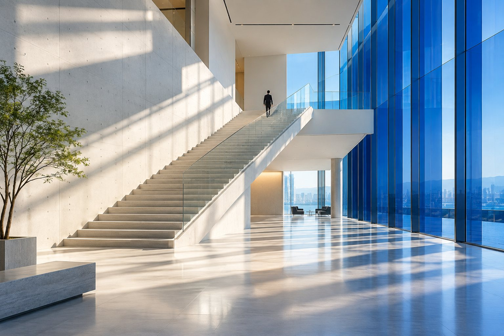

RECRUIT / PREVIEW
あなたの視点を、
次の可能性へ。

採用情報への、
迷わない入口。
本番では、依頼者が用意するNotionの採用ページへ接続する想定です。現在は未接続のため、この確認ページを表示しています。
架空の求人募集や応募受付は行っていません。募集職種・働き方・選考方法などは、確定した情報で本番ページを構成します。
会社紹介へ戻る ↶RECRUIT / PREVIEW

本番では、依頼者が用意するNotionの採用ページへ接続する想定です。現在は未接続のため、この確認ページを表示しています。
架空の求人募集や応募受付は行っていません。募集職種・働き方・選考方法などは、確定した情報で本番ページを構成します。
会社紹介へ戻る ↶